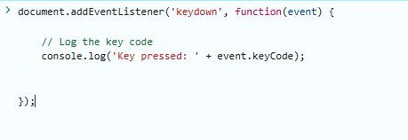
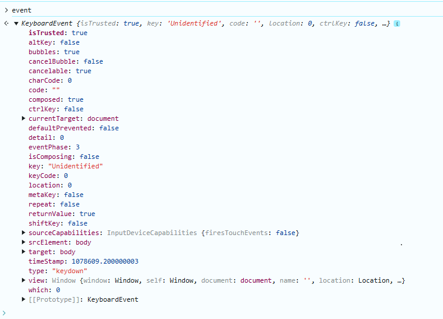

How to find key code value for HW yellow left and right button in TC27 PDA
//Expert user has replied.
Hello
I am cordova developer.
i tryed to get key code value for Hardware yellow button left and right using "keydown" event but always return key: "Unidentified" and keyCode: 0
"keydown" even

> Response

can you please give me suggestion for how to get key code value for both button in javascript side?
Thank you
5 Replies
The yellow buttons are defined as triggers so they can't be detected as keys in standard Javascript. However, if you use Zebra Enterprise Browser then you can detect triggers using the EB.KeyCapture.captureTrigger() method as detailed here : https://techdocs.zebra.com/enterprise-browser/5-0/tutorial/keycapture/
Because the yellow keys will only work with a Zebra device, you could capture the onKeyUp/Down in the Android plugin, such as here in this sample project https://github.com/NDZL/ionic-cap-echo/blob/main/android/src/main/java/com/ndzl/cap/echo/EchoPluginPlugin.java
When the key code is captured, pass it back to the common UI code as I did here with notifyListeners https://github.com/NDZL/ionic-cap-echo/blob/b00a7f102a9dd1874edc020a0097bacee6c7d808/android/src/main/java/com/ndzl/cap/echo/EchoPluginPlugin.java#L73
Finally, in the js/ts code, receive the value in a locally defined listener such as this one
https://github.com/NDZL/ionic-cap-use-datawedge-echoplugin/blob/c421ff32dbb3acd6229137c474e27abeb9320ece/src/app/tab1/tab1.page.ts#L24
Please recall that the yellow buttons are mapped to trigger the barcode scanner, so if you just need to scan, refer to DATAWEDGE https://techdocs.zebra.com/datawedge/13-0/guide/about/, which relies on Intents to deliver data and be configured.
Hello,
[Image unavailable locally: https://developer.zebra.com/sites/default/files/inline-images/2025_01_22_15_01_40_com.example.KEYCODE_KEYCODE.png]i checked in android Logcat view during press HW button (Left, Right and Scan buttons)
i found that 136, 137 and 138 code getting when press button.
can you please suggest how to "HardKeyDownEvent" event handle in cordova application using javascript or plugin?
Thank you
Hi Patel, in my previous answer above, I showed you a way to achieve what you requested.
Did you try it? Can you share the challenges/results you faced?
Thanks
Hello Nicola
yes, i checked but not return keycode value in app side
i need to only keycode value when button press, because i using cordova plugin for scanner, not using DATAWEDGE
like,. after return key code value, i will decide this key to start RFID or 2D scanner (both are working with cordova plugin)
can i directly, find keycode value in app after press Hardware button?
Thank you
Chetan Patel